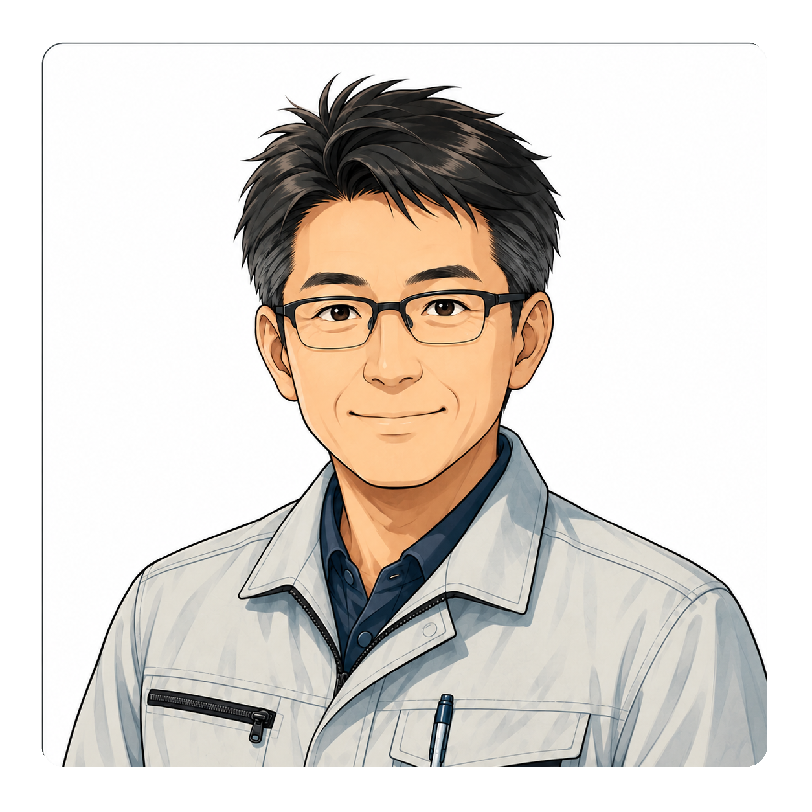
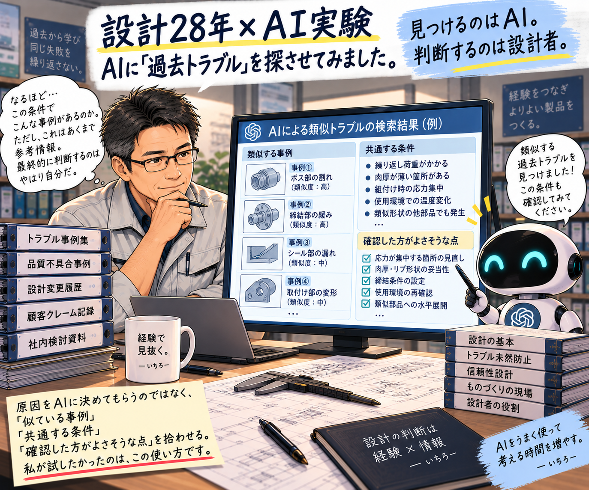
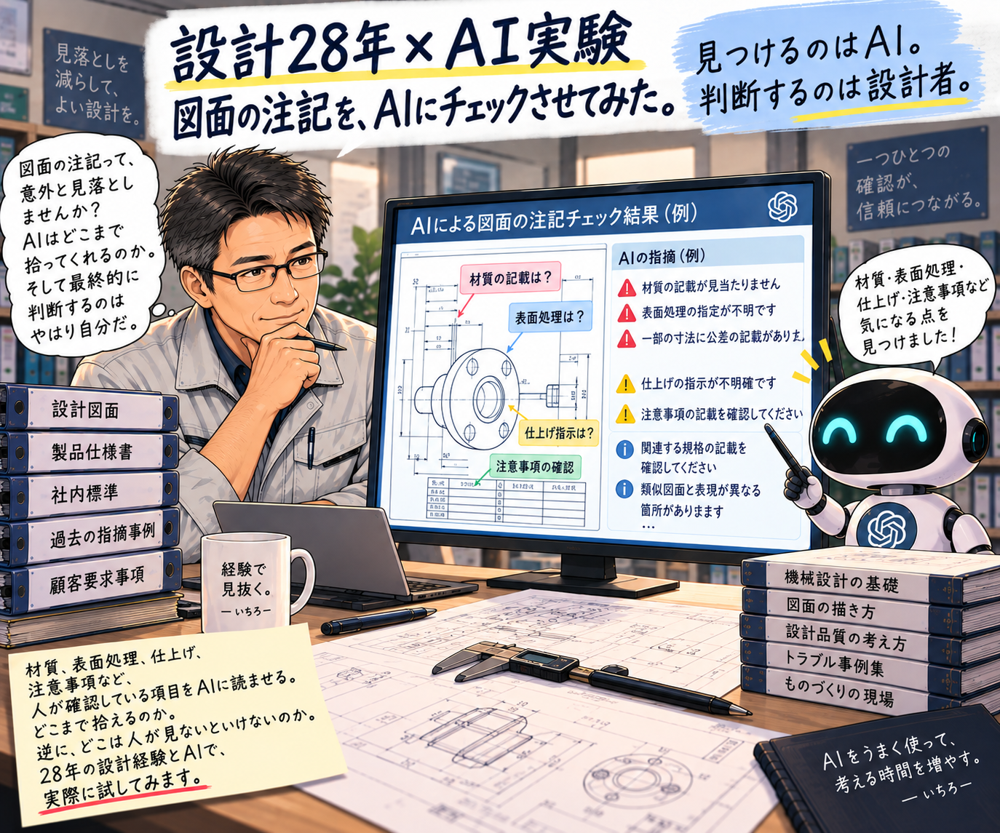
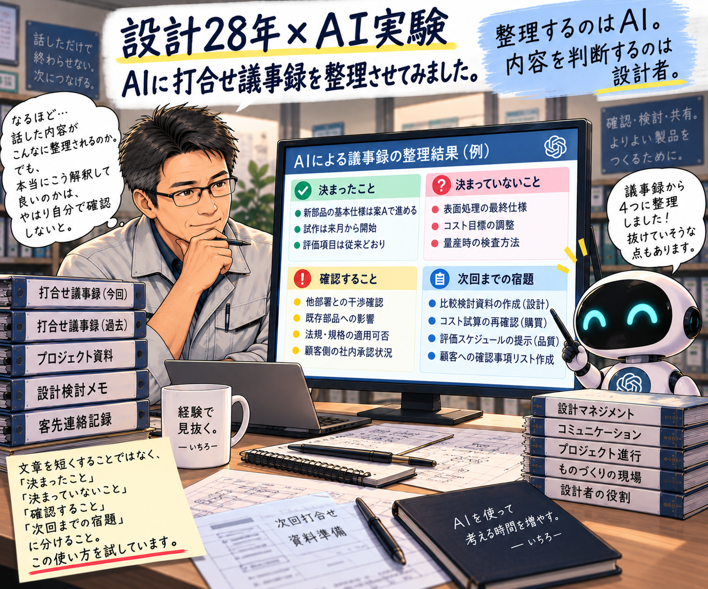

01 / EFFICIENCY
業務効率化
設計者が本来考えるべきことに、もっと時間を使うための考え方。

樹脂成形部品の設計に携わり、これまで150点以上の部品設計を経験してきました。
設計では、CADで形状を作るだけではありません。確認する。調べる。比較する。説明する。手戻りを防ぐ。そうした仕事にも、多くの時間を使います。
だからこそ、単に作業を早く終わらせるのではなく、設計者が考える時間を増やすことを意識してきました。
この経験をもとに、設計現場で使える考え方、業務効率化、手戻り防止、AI活用について発信しています。
設計者が本来考えるべきことに、もっと時間を使うために。実務での経験を、現場で使える形に整理しています。
設計者が本来考えるべきことに、もっと時間を使うための考え方。
設計変更、レビュー、確認などで発生する、後から増える作業を減らすための考え方。
何を変えるかだけでなく、何を変えないかも含めた設計判断。
情報整理、確認、過去情報の活用などをAIに補助させる考え方。
設計・製造・品質・レビュー・改善。設計を取り巻く実務の中で考えてきたことを、次の設計者が使える形にして届けます。
単なる実績の紹介ではなく、実務で得た判断や気づきを、次の設計者が再利用できるように整理して発信します。
設計そのものをAIに任せるのではなく、探す・整理する・比較する・確認するといった部分をAIに補助してもらう。実務で使える可能性を試しています。
AIの出力をそのまま採用するのではなく、設計者が内容を確認し、判断するための補助として活用します。

AIに過去トラブルを読ませてみた

AIに図面の注記をチェックさせてみた

AIに打合せ議事録を整理させてみた
※ 既存のAI実験画像を、そのまま掲載しています。
Xでは書ききれない、設計28年の実務経験、業務効率化、手戻り防止、設計判断、AI活用などを詳しくまとめています。
設計28年の実務経験から、日々の気づきや設計判断、業務効率化、手戻り防止、設計×改善×AIについて発信しています。
作業を減らすことが目的ではありません。
探す時間。確認する時間。やり直す時間。
そうした時間を減らして、設計者が考える時間を取り戻す。
それが、設計28年の経験から発信しているテーマです。